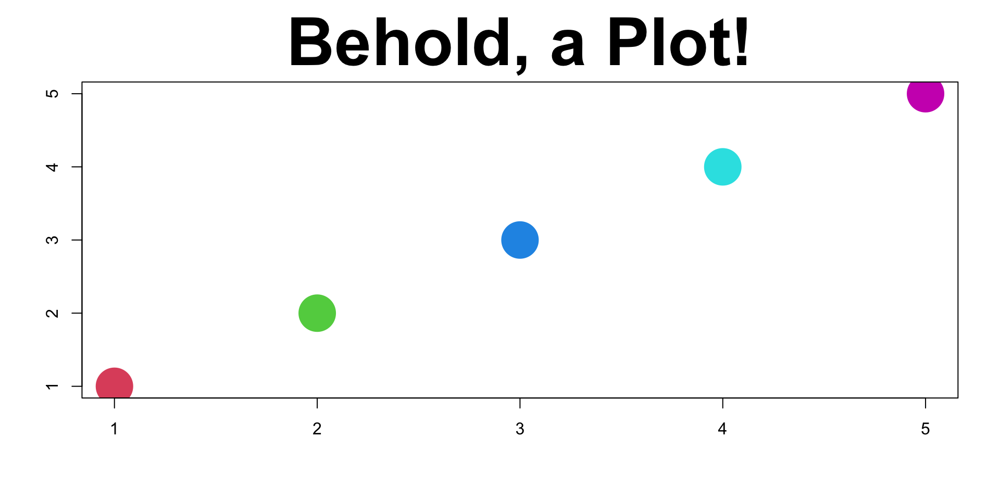

Software Tools for Data Analysis
STA 9750
Michael Weylandt
Week 2
STA 9750 Week 2
Today:
- Tuesday Section: 2025-09-02
- Thursday Section: 2025-09-04
Lecture #02: Tools for Reproducible Research, Lecture #02: Tools for Reproducible Research
Course Enrollment
Final enrollment: 98(!)
- \(\approx 20\) final project teams (4-6 each)
- Approx 4 MPs to review per peer-feedback cycle
Lots of students: please follow instructions closely so I can automate course management.
- Less time spent ‘shuffling paper’ gives more time for feedback and student support
Course Project Draft
Course project draft description is now online
Detailed discussion of:
- Project structure
- Key deadlines
- Grading rubrics
Will be finalized next week - 2025-09-09.
Please send me questions in advance!
First step: by 2025-09-30, email me your group members.
Teaching Assistant (GTA)
GTA - Charles Ramirez
Responsibilities TBD. Likely:
- Managing grading
- Weekly office hours
Won’t start for a few weeks - CUNY is slow
Piazza
- 63 sign-ups: 35 still need to sign up
- Thank you for those of you who already posted questions!
- Post #05 - Search for Teammates
Instructor Tip: Before committing a team with someone, you can look up their GitHub and see how they did on MP#00 and MP#01. This might be helpful to find teammates whose standards are calibrated to your own.
Pre-Assignments
Pre-Assignment #02
- Ignore Brightspace’s Grading
- Brightspace calls all short answers wrong
- Gradebook shows complete/incomplete grading
- I often give feedback through Brightspace, so check ‘feedback’ if you are alerted to any
Pre-Assignment #03
- Day before class at midnight each week
- Available on course website + Brightspace after 9pm
Mini-Project #00
- Due in (slightly less than) a week
- Friday, September 12
- Possible tech issues, so start early
- 10 GitHub tag + Piazza Messages so far
Verification of Enrollment - Required to stay enrolled in class
Optional DataCamp
New optional DataCamp course:
- Reporting with R Markdown
R Markdown is proto-Quarto:
Today
- Introduction to Markdown and Quarto
- Review of Questions from Pre-Assign #02
- Introduction to Git and GitHub pages
- How to ask for help
Introduction Markdown and Quarto
Markdown
Markdown:
- Initially developed to replace complex mark-up languages (HTML, XML)
- Simple syntax:
- Can be read as plain text
- Easy to translate to HTML
- Now ubiquitous (even in ChatGPT!)
- Can be used for more than just web pages
- Standardized as CommonMark
Markdown
Source code:
Markdown
Output:
This is what Markdown looks like!
I can write in italics or bold.
Lists are easy:
- First
- Second
- Third
as are links to helpful info.
Rendering Markdown
Markdown is just a language:
- Software needed to render from plain text to output formats
- Most popular (behind the scenes) is Pandoc

Rendering Markdown
Pandoc can essentially convert anything to anything:
Markdown - WYSIWYM
Markdown is a WYSIWYM format:
- What You See is What Y Mean
- Not WYSIWYG: What You See is What Y Get
Extensions allow finer control of formatting
- Provide templates to
pandocfor finer control (not in this class)
Markdown and Quarto
- Quarto implements Markdown with data-analytic extensions
- Seamless (ideally!) integration of code and text
- No more copy and paste

Markdown and Quarto
In this class, web sites:
- Each
qmddocument becomes a singlehtmlfile (page) - All files in directory collectively make a web site
- GitHub project \(\implies\) your website in MP#00
Resources:
- Quarto user guide is fantastic!
- Source for course materials for examples
RStudio - A Useful IDE
Official Cheat Sheets:
Data Camp RStudio Tutorial (Free)
- For today, first ~half
RStudio has native Quarto support: just hit “Render”
FAQs from PA#02
Q1
What is Markdown?
Per Wikipedia: “Markdown is a light-weight, plain-text, markup language specification”
- Light-weight: relatively simple, focus on content than formatting
- Plain-text: accessible using almost any text editor (RStudio, GitHub, VS Code, etc)
- Not locked into specific software (e.g., MS Word)
- Easily incorporated into a variety of technologies
Q1
What is Markdown?
- Markup language: a ‘mini-coding language’ for text documents
- Other famous examples: HTML, XML
- Specification:
- CommonMark defines ‘standard’ Markdown
- Some software allows extensions
- Pandoc often powers under the hood
Q2
Other than text formatting, does Markdown have any other uses?
On its own, Markdown is just text formatting (but that’s a lot!)
We will use Quarto which augments markdown for reproducible research.
We can embed code-and its output-inside Markdown documents.
Q3
What uses Markdown?
So much! Used by Bitbucket, GitHub, OpenStreetMap, Reddit, Stack Exchange, Drupal, ChatGPT, Discord, MS Teams and many more!
Tools like Pandoc/Quarto render Markdown to:
- HTML
- Web Slides
- EBooks
- Research Papers
- Word Documents
- PowerPoint slides
- and so much more!
Q4
What is the difference between a Code section and a Nested List? Are they just different ways of indenting?
No. Nested lists are ‘just’ text
Code formatting enables much more if rendering engine supports it:
Q5
How are we going to use Markdown?
All written work (mini-projects and final project) in this course will be submitted using Markdown (by way of Quarto).
Specifically:
- Submission pages for 5 mini-projects
- Individual reports for course project
- Summary (team) report for final project
You are also encouraged (but not required) to use Markdown for presentation slides (like these!)
Q6
How can I create Tables in Markdown?
Markdown has two table syntaxes:
- an easy one with minimal control
- a hard one which allows fine grained control (alignment, column widths, etc.) - “pipe tables”
If you are making complex tables, I recommend using the list-table extension.
(See syllabus.qmd in course repo for examples.)
Q7
How to create images and links?
Basic hyperlinks look like this:
[link text](https://the.url/goes/here)If you want to embed the contents of a link, prepend it with an exclamation point. This is most useful for images:
You can even put a link inside an image to be fancy:
[](https://en.wikipedia.org/wiki/Elephant)Q7
How to create images and links?
Quarto automatically embeds the results of plotting code:
Here, Quarto handles all the file creation and link targeting for us. If I change the code, the figure will change automatically.
Git and GitHub Pages
Git
git is the industry-standard tool for source code management (SCM)
- SCM aka Version Control Systems (VCS) are used to manage code through the development process
- Saves versions of your code and lets you access them whenever
- Not automatic like Dropbox: you save a version when you intend
- Powerful tools for parallel versions or multiple authors - we won’t be using these
Git
Courtesy of PhD Comics, this is what we want to avoid:

Git
Git tracks changes to files
- A commit is both a set of changes & the result of all changes to that point
- A branch name (like
main) is just a stand-in for “latest commit”
The Cycle of Git
For this course, I like the mental model of a box:
git add: Commands to put changes in the boxgit commit: Seal the box and put shipping info on the outsidegit push: Send the box (to GitHub)
The Cycle of Git
From GitHub user @design-web-victo:

RStudio Git Integration
Once you create a project, RStudio has built-in git integration
- Do the same commands with buttons instead of code

- Uncheck Blue
Mare files that have been Modified since the last commit - Yellow
?are files I have never toldgitto track
RStudio Git Integration
Check box next to a file name to stage (or add) it in git
- Load it in the box
- Getting ready to save it

RStudio Git Integration
Create a commit with the Commit button
- You have to type a message and hit
Commita second time

Git to GitHub
git push (green up arrow button) to move files to GitHub
Resulting commit now visible on GitHub
Automatically updates website as well
File no longer listed in Git pane - no new changes
- If I make more changes, file will reappear as
M
GitHub
For us, GitHub is just a “dumping ground”
- Only send data to
GitHubfrom a single computer - Much more complex workflow if moving changes up and down
Warning: Do not make any edits using the GitHub website. This will cause tons of pain. All changes should be made from one computer and pushed upwards only.
GitHub Pages
GitHub provides GitHub Pages
- Free hosting for static web pages
- Static means no login or server-side interactivity
- Limited client-side activity via JavaScript
We will use GitHub pages for all work submission in this class
- Public visibility (portfolio)
- Uploading
qmdfiles allows automatic checks - Peer evaluation and discussion
- Follow instructions carefully & I can automate
GitHub Instructions
By default, URLs like:
https://<GITHUB_ID>.github.io/<GITHUB_REPONAME>
. . .
If you create a repo called <GITHUB_ID>.github.io, URL simplifies:
https://<GITHUB_ID>.github.io/
. . .
If you own a domain, you can map to arbitrary base URL:
https://<DOMAIN_NAME>/<GITHUB_REPONAME>
E.g., https://michael-weylandt.com/STA9750
Brackets in Instructions
Throughout course instructions, you will see things like <GITHUB_ID>
- Substitue your GitHub account name for the whole string, including brackets
. . .
For me, if instructions say
STA 9750 <GITHUB ID> Mini Project #00
I will type
STA 9750 michaelweylandt Mini Project #00
(no brackets)
How to Ask for Help
How to Ask for Help
Professional programming is at least half looking things up; at beginning stages, the fraction is even higher.
So it’s important to know how to see help the smart way:
- Official documentation. Free software almost never becomes famous without great documentation:
Rand its packages are no exception. Everything we will use in this class has solid documentation.
How to Ask for Help
- Search Engine.
Most programming challenges have been faced by somebody before, so Google it!
Tips:
- Include
Rorrstatsin your search query - It’s better to search what you want to do rather than how you think you should do it.
- Search programming Q&A sites like
StackOverflowfor specific code questions; blogs and course materials are better for “big picture” questions
How to Ask for Help
- Ask on a Forum with a Reproducible Example
Programming fora, like StackOverflow, are full of great resources. Most of what you need is already there. But if you need to ask a new question, make sure to create a minimal reproducible example
Make it easy for your helper to help you.
- Minimal: narrow down to as few lines of code as possible
- Reproducible: self-contained without dependencies on libraries (if can be avoided); load all packages needed; use standard data
Pro-Tip: You’ll solve over 50% of your problems in trying to create an MRE.
How to Ask for Help
Tips:
- Show the code, even if it doesn’t work
- Send code as text, not screenshot (so your helper can run it)
- Smaller examples help narrow down problems
- Avoid IO (file input and output) unless specifically relevant to problem
- Remove everything you can
The reprex R package helps with this: see this talk.
For this class, rely on Piazza!
Wrap-Up
Upcoming Work
Upcoming work from course calendar
- Pre-Assignment #03 due
- Mini-Project #00 due
- Mini-Project #00 peer feedback assigned
- Mini-Project #01 released
- Course Project officially released
Looking Ahead
Course Project:
- Start looking for teammates and topics
Life Tip of the Week
Recommendations from Professors
In the near future, you may want recommendations from your professors. Some advice on getting good recommendations:
- Understand professional vs academic recommendations
- Seek out strong recommendations
- Confidential recommendations highly preferrable
Professional vs Academic
Professional: For a job. Typically a brief survey or quick reference check.
Academic: For awards, fellowships, research positions, graduate admissions. A personalized letter from me.
I can usually do professional recommendations quickly (4-5 business days). Academic recommendations require a minimum of two weeks.
Strong Recommendations
A strong recommendation is one that supplements what is already in your application.
- Say things that aren’t on your transcript
- Attest to character and quality of work
The better I know you, the stronger a letter I can write.
You can ask if a professor can write you a strong recommendation. If they say they can write, but it may not be strong, consider asking elsewhere.
Strong Recommendations
Ugly:
Student N took my class and received an A.
Bad:
Student N took my XYZ class and received an A. My XYZ class covers ABC at an advanced level and provides N a strong foundation for your program.
Good:
I first met student N in my XYZ class. She was an active participant in class, regularly attended my office hours, and regularly asked for additional advanced material. She had a remarkable final project in which she ABC. It is clear that her drive and passion for XYZ make her an excellent candidate for your fellowship.
Confidentiality
Under some parts of US law, you have the right to see what letters for you I write unless you specifically waive that right.
Waive the right
Readers will assume you have read a non-confidential letter and discount whatever I say.
My Policy
I will write a letter for any student who has passed one of my classes (C or higher) or is on track to do so.
No guarantee it is strong unless you ask. I understand that sometimes you are just trying to make sure you have enough.
Give me at least 3 weeks, ideally more. A rushed letter is a short and generic letter.
My Policy
Send me:
- Description of who I’m writing to
- Your CV / Resume
- Your latest transcript
- Presentations/project materials from my class
Once a letter is written, it’s easy for me to update and re-use.
Help me help you.